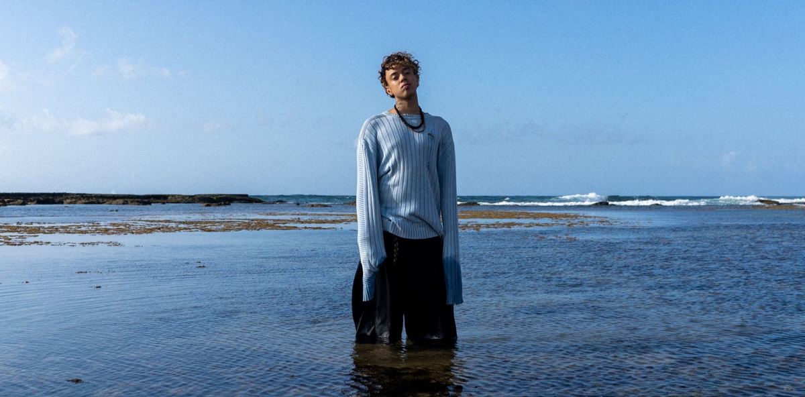
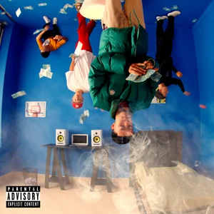

Teto

Clériton Sávio Santos Silva (nascido em 19 de outubro de 2001, em Jacobina), mais conhecido como Teto, é um rapper, cantor e compositor brasileiro. Ele ganhou reconhecimento por meio de prévias de suas músicas que foram compartilhadas de forma não oficial em diversos canais do YouTube, acumulando milhões de visualizações e alcançando fama em plataformas de redes sociais como TikTok e Instagram.
Infância e juventude
Clériton Sávio Santos Silva nasceu em 19 de outubro de 2001, no município de Jacobina, no estado da Bahia. Ele recorda que, aos oito anos de idade, costumava ouvir seu pai tocar e cantar diversos gêneros musicais em casa, como pagode, axé e MPB. Teto começou a compor aos doze anos e, até hoje, grava tudo em seu próprio quarto. Foi nesse cômodo que ele gravou diversas prévias musicais — prévias que, por fim, lhe trouxeram um reconhecimento significativo.
Carreira
Início de carreira, sucesso com as prévias e contrato com a 30PRAUM (2018–2021)
Teto iniciou sua carreira musical em 2018, lançando algumas músicas ("Fico Famoso" e "Say Yes") que não ganharam tração e acabaram sendo removidas das plataformas digitais. No final de 2019, a gravadora Hash Produções interessou-se por ele e estabeleceu uma parceria de investimento. Embora tenha gravado várias faixas com o selo — chegando a aparecer ao lado de outros artistas da empresa na mixtape "Bagulhão" (que incluía sua música "100") —, ele ficou frustrado com a demora em sua estreia oficial. Em entrevista ao G1, ele explicou sua saída da Hash: "As pessoas falam e especulam muita coisa, mas a verdade é que eu sempre quis que meu trabalho fosse valorizado; sempre quis ver o mercado evoluir. Na Hash Produções, não senti que houvesse um profissionalismo real — não parecia que estavam levando as coisas a sério". Teto conseguiu construir uma base de fãs após fazer participações nos sucessos de 2020 "Drip da Roça", de Reid — que acumulou mais de 50 milhões de visualizações no YouTube —, e "Saturno", de Burn-O. Naquele mesmo ano, ele começou a realizar transmissões ao vivo no Instagram para promover suas músicas, que ainda estavam em fase de produção. Fãs que gostavam de seu trabalho começaram a publicar essas faixas de forma não oficial; no YouTube, elas ficaram conhecidas como "previews" (ou trechos). Vídeos contendo suas músicas alcançaram milhões de visualizações em diversos canais. "Eu simplesmente posicionava o celular e fazia uma live. As pessoas entravam, eu tocava minhas músicas e elas adoravam — isso realmente ressoou com o público. Foi uma experiência incrível, e as pessoas perceberam que eu era um garoto diferente", contou Teto ao G1. O burburinho em torno dele chamou a atenção do rapper Matuê, que entrou em contato com Teto, expressando interesse em uma colaboração na faixa "M4". O que começou como uma simples participação acabou resultando em um convite para que Teto integrasse a 30PRAUM, gravadora de Matuê. Como ainda mantinha um acordo pré-contratual com a Hash Produções, Teto optou por não dar continuidade a esse vínculo; em vez disso, assinou com a 30PRAUM em janeiro de 2021, dando início, de fato, à sua carreira profissional. Com a ascensão de seu sucesso, Teto enfrentou problemas relacionados ao lançamento não autorizado de suas músicas, já que algumas pessoas estavam enviando, de forma clandestina, seus singles para o Spotify. Durante uma transmissão ao vivo no Instagram, o rapper desabafou sobre a situação: "Como é possível alguém lançar uma música no meu perfil de artista? Não faz sentido nenhum... Já estamos trabalhando para remover essas faixas que vazaram, mas isso nem deveria ser possível", declarou Teto. Em um show, Teto anunciou o retorno do "antigo Teto" e, para celebrar, lançou "Savana" — um single muito aguardado por seus fãs —, que ficou disponível por um período de 24 horas.
M4, Prévias.zip e outros lançamentos (2021)
O single M4, que inclui participação especial de Matuê, foi produzido por Fernospazzin e Gibbo, sendo lançado pela 30PRAUM, em 19 de janeiro de 2021. A música ficou no Top 15 músicas do Spotify mais ouvidas no Brasil com apenas poucos dias de lançamento e também permaneceu no Top 5 de músicas mais tocadas do país por mais de 2 meses consecutivos. Seu primeiro EP chamado de Prévias.zip foi lançado em 1º de abril de 2021, pela 30PRAUM, com a distribuição da Sony Music Brasil. As músicas somaram milhões de acessos em todas as plataformas. Três das quatro faixas do EP ficaram nas posições mais altas da sessão “Em Alta” do YouTube, sendo elas “PayPal”, “Dia Azul” e “Manha” respectivamente, perdendo apenas a primeira posição para o grupo coreano BTS. O EP alcançou o primeiro lugar nas paradas musicais da Apple Music Brasil e iTunes Egito, com todas as faixas também entrando nas paradas musicais do Brasil. A música Paypal foi a que teve melhor desempenho, ficando na posição 8° da Apple Music Brasil, 92° da iTunes Brasil e 79° do Spotify Brasil. Teto foi escolhido pelo Spotify como artista "RADAR" do mês de abril. Durante todo o mês, estando na capa da playlist Radar Brasil, responsável por apresentar novos artistas e músicas de diversos gêneros para o público. Ele foi considerado pelo jornal digital "Rap Mais", como "um dos rappers brasileiros mais ouvidos no Spotify, em Abril". Em agosto de 2021, o artista fez uma participação especial na live "Quer Voar Experience" da gravadora 30PRAUM, cantando seu hit "M4" ao lado de Matuê. Em pouco tempo, a live alcançou mais de 100 mil pessoas, conquistando o recorde nacional de 1ª premiere de clipe nacional de 2021. Além de conseguir 2 milhões de visualizações em 24 horas. Em 28 de setembro de 2021 é lançado o single Groupies. Através de parceria exclusiva e inovadora com a Cinemark, foi exibido o videoclipe nos cinemas de todo Brasil. O videoclipe atingiu 1 milhão de visualizações em apenas 3 horas e sua premiere alcançou o recorde brasileiro com 133 mil pessoas assistindo a estreia do clipe, ultrapassando o hit "Modo Turbo", de Luísa Sonza, e se destacando nas paradas musicais do Brasil, Portugal e Angola. Em 10 de outubro de 2021, o artista lançou o single Mustang Preto juntamente com um videoclipe super bem produzido, no qual conta com direção de Felipe Vieira. A música ficou na posição 78° do Spotify Brasil, 192° do Spotify Portugal, 79° do Youtube Brasil, 107° do Apple Music Angola e 197° do Apple Music Brasil. Em novembro de 2021, Teto embarcou na mini turnê "Revoada USA" juntamente com MC Hariel e Matuê, a fim de promover sua carreira nos Estados Unidos. A turnê foi realizada pela produtora Reset Entertainment em parceria com a All Star Produções. Ela iniciou na cidade de Newark, no dia 20 de novembro, e seguiu para apresentações nas cidades de Boston, Atlanta, Miami, Orlando, tendo seu encerramento no dia 28 de novembro de 2021, na cidade de San Diego. Poucos dias antes, em 17 de novembro de 2021, Teto lançou seu quarto single chamado A Lua, uma regravação da música de mesmo nome da banda baiana conhecida como "Filhos de Jorge", sendo parte de um projeto do Spotify chamado "Spotify Singles". O single alcançou a posição 144° do Spotify Brasil.
MAIOR QUE O TEMPO e antecedentes (2025–presente)
Após o lançamento de 'prévias.zip', Teto passou quase quatro anos sem lançar um álbum ou EP — uma longa espera que apenas intensificou a expectativa dos fãs, que já haviam reconhecido seu potencial ainda em 2021. Durante esse período, Teto enfrentou críticas consideráveis por não ter aproveitado o hype para lançar um álbum de estúdio; ele também foi questionado por mudar seu estilo musical, aproximando-se do afrobeats e do hip-hop alternativo. Em janeiro de 2025, Teto lançou seu segundo EP, intitulado 'tempo.zip', que trouxe faixas antigas — músicas que os fãs aguardavam e pediam há muito tempo. No Instagram, ele compartilhou as seguintes mensagens: "Cheguei até aqui por causa das escolhas que fiz — algumas certas, muitas erradas" e "Agora vejo tudo com clareza, e vou fazer melhor. 'tempo.zip' foi apenas uma das coisas que coloquei no lugar certo". Os fãs interpretaram isso como um esforço para abordar e corrigir aspectos de sua trajetória que não haviam se concretizado plenamente. No dia 27 de março de 2025, Teto finalmente lançou seu álbum de estreia. Intitulado 'GREATEST THAN TIME', o projeto é composto por dois álbuns que exploram uma dualidade: o primeiro representa as raízes de Teto no trap, enquanto o segundo reflete sua nova direção musical, permitindo-lhe exibir uma faceta mais artística. O álbum é visto como uma "despedida" da fase anterior de sua carreira.
Características musicais
Teto costuma falar em suas músicas sobre dinheiro, mulheres, sonhos, objetivos e inveja. Seu destaque na cena do trap talvez esteja ligado por suas melodias e forma de encaixar os assuntos na hora da escrita. O artista também costuma utilizar a técnica de canto melisma em suas músicas.
Legado e reconhecimento
Mesmo em pouco tempo, Teto já tem vários reconhecimentos. Ele se tornou um dos maiores artistas de sucesso do Brasil no momento apenas lançando prévias de suas músicas e também se tornando uma das revelações do Trap no ano de 2020. O jornal digital Rap Mais comentou que "O jovem artista Teto já pode ser considerado um fenômeno das redes sociais e um nome para ficar de olho em 2021". Ele também foi o primeiro músico brasileiro que atingiu a marca de um milhão de seguidores no Instagram, mesmo sem lançar nenhuma música oficial.
Discografia
O rapper possui diversas músicas que vazaram e nunca foram lançadas oficialmente como singles — por exemplo, faixas intituladas "Savana", "Drogas", "Chanel", "Futuro", "Lemon Haze", "Foda-se o Inferno" e "Te Amo Mãe", entre inúmeras outras que surgiram na internet. Em abril de 2020, enquanto estava vinculado à gravadora Hash Produções, Teto também lançou as músicas "100" e "High" (com a participação de Dascar, Alee e Jovem Dex); no entanto, essa mixtape acabou sendo engavetada posteriormente.
Álbuns de estúdio
- MAIOR QUE O TEMPO (2025)
- COLAPSO GLOBAL (com: WIU) (2026)
EP's
-

Prévias.zip (2021) - tempo.zip (2025)
| Simples | Lançamento | Álbum |
|---|---|---|
| M4 | Janeiro de 2021 | — |
| Paypal | Abril de 2021 | Prévias.zip |
| Dia Azul | Abril de 2021 | Prévias.zip |
| Fashion | Abril de 2021 | Prévias.zip |
| Manha | Abril de 2021 | Prévias.zip |
| Groupies | Setembro de 2021 | — |
| Mustang Preto | Outubro de 2021 | — |
| Fim de Semana no Rio | Março de 2022 | — |
| VAMPiro | Abril de 2022 | — |
| Flow Espacial | Janeiro de 2023 | — |
| Minha Vida é um Filme | Março de 2023 | — |
| Movimento | Março de 2023 | — |
| Mais um Voo | Outubro de 2023 | — |
| zumzumzum | Janeiro de 2024 | — |
| Problemas de um Milionário | 10 de abril de 2024 | — |
| Embalo | 25 de abr. de 2024 | — |
| OK! OK | 25 de jul. de 2024 | — |
| 4TAL | 9 de set. de 2024 | 333 (álbum) |
| EURO LIBRA | 23 de out. de 2024 | Ceo |
| YES OR NO | 26 de mar. 2025 | MAIOR QUE O TEMPO |
Participações em outras músicas
- Rara [Kawan ft. Teto] (2020)
- Drip da Roça [Reid, Doode, Teto, Ear Kid, Stef & Fabin] (2020)
- Saturno [Burn-O ft. Doode, Teto] (2020)
- Ixle [Kawan ft. Teto, Dascar] (2020)
- Melhor Dia 7 [Marcos Baroni ft. Teto, WIU, Edi Rock, Alee, Brandão] (2022)
- Poesia Acústica #12 - Pra Sempre [Filipe Ret, Caio Luccas, Bin, Budah, Borges, Marina Sena, Teto, Luiz Lins] (2022)
- Mizzy Miles - EUROPA feat. Deejay Telio, Teto & Gson (2022)
- Mizzy Miles - "Ninguém Entende Nada" feat. Teto e MC PH (2024)
- Mizzy Miles - "God Bless" feat. Slow J & Teto (2025)
- ISSO AQUI É BRASIL ft WIU, Deekapz (2026)
Prêmios e indicações
| Ano | Prêmio | Categoria | Resultado |
|---|---|---|---|
| 2021 | Prêmio Rap Forte | Hit do Ano | Nomeado |
| 2021 | Prêmio Rap Forte | Revelação | Nomeado |
| 2021 | Prêmio Verov | Revelação | Venceu |
| 2022 | MTV MIAW | Hino do Ano ("VAMPiro" – Matuê, Teto e WIU) | Nomeado |
| 2022 | MTV MIAW | Feat. Nacional ("VAMPiro" – Matuê, Teto e WIU) | Nomeado |
| 2022 | MTV MIAW | Trap na Cena (Teto) | Nomeado |